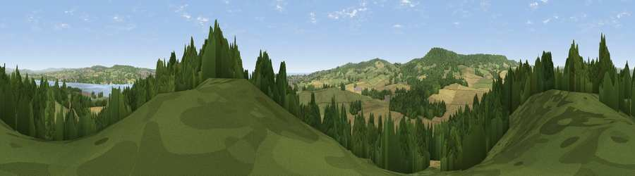

Warboro Hill
#17529 in England · top 33% of its area beats it · near KentonThe view, rendered

A 360° render of this exact spot computed from the terrain model, tree cover and land cover — summer colours, afternoon light, calibrated against photographs of famous viewpoints. Real trees, hedges and buildings will differ in detail.
The panorama
Grey silhouette: terrain skyline in each direction (720 bearings, Earth curvature and refraction included). Dashed green: skyline with trees (+15 m) and buildings (+8 m) as obstacles. Blue strip: how far the ground is visible on each bearing.
Where the view opens
Wedge length = distance to the farthest visible ground on that bearing (vegetation-aware). Rings at 10, 25 and 50 km.
What fills the view
36% woodland · 31% grassland · 26% cropland · 5% water · 2% built-up
Angular shares of the visible panorama (visual magnitude), not map area. Landscape diversity 0.57 (0–1 Shannon).
Key numbers
More beautiful places nearby
The staircase of upgrades: each row has a higher view potential than everything closer. Driving times are estimates from straight-line distance, calibrated against real road routing — check an actual route before setting out.
| Place | Direction | Drive | Score |
|---|---|---|---|
| Easter Hill | SSE · 2 km | ~4 min | 56.1 |
| Powderham Park | N · 2 km | ~5 min | 60.3 |
| Viewpoint near Kenton | WSW · 3 km | ~8 min | 80.7 |
| Viewpoint near Kenton | WSW · 4 km | ~9 min | 82.9 |
| Viewpoint near Holcombe | SSW · 8 km | ~16 min | 83.3 |
| Viewpoint near Shaldon | SSW · 12 km | ~22 min | 83.8 |
| Viewpoint near Stokeinteignhead | SSW · 13 km | ~24 min | 84.1 |
| High Peak | ENE · 15 km | ~27 min | 85.3 |
50.63175, -3.47282 · source: dobih hill · position refined by local search. Computed location — check access rights before visiting.